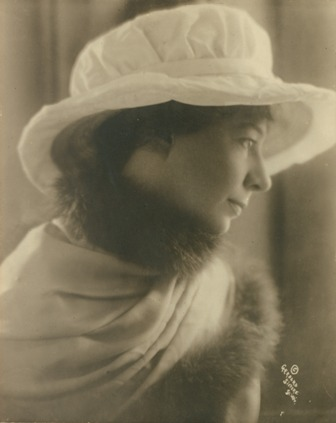

Sara Teasdale in 1910
Born: August 8, 1884
Saint Louis, MO
Died: January 29, 1933
New York City, NY
A prominent American poet
Laureat of the first Pulitzer Prize for poetry
"Flame and Shadow" is a new opera that takes you on a journey of Sara Teasdale's life from her beginnings as a poet, friendships, loves, heartbreaks, and successes, through her final hours - all revealed during a phone conversation with the love of her life. Sara had a profound love of life and beauty, yet her ability to create was constantly suppressed by chronic illness. Sara's poor health, aggravated by life-long emotional conflicts, eventually led her to take her own life.
The idea to compose an opera based on Sara Teasdale's life and work was suggested to me by my friend Kathy Favazza at the time when I was composing my song cycle "Six Love Songs by Sara Teasdale". I shared with Kathy what I had learned about Sara Teasdale's life, and the more we talked about it, the more we became convinced that Sara's story needed to be told and that we needed to tell it through music.
Kathy offered her literary talent to create the libretto, and we began our creative journey, in which we share a common vision and a great passion for this future work.
Sara Teasdale's story not only reveals the beauty and a profound complexity of her person and her artistic style, it also enlightens and inspires us about the vibrancy of her time, as well as brings out many relevant social and cultural issues, such as the role of women artists in history, the evolution of women's social and cultural status, the society's outlook on war, and artists' emotional challenges of dealing with depression and health issues. She was an outspoken advocate of women's right to receive higher education and their role in the arts. She was also a passionate supporter of her female contemporaries and used her success and influence to promote their art. Her work has given inspiration and encouragement to younger generations of women artists, including many female poets of today, and helped establish their historical placement in the world culture.
Sara Teasdale was a descendent from the era of women's suffrage and a product of St. Louis' rich cultural and vibrant history at the turn of the 20th century. Surrounded by highly creative and progressively minded contemporaries, Sara developed as one of the leading artists of her time. Her work is a historically important contribution to American literary and cultural legacy. She was one of the most prominent poets of her time who was the first to receive a Pulitzer Prize for Poetry, which was specially created in 1918 by the Poetry Society to award her for the book "Love Songs".
Through Sara Teasdale's story, this opera will introduce some of the most significant artists of her time. She was an admired member of the local and regional literary and cultural circles. Among her contemporaries, some of whom played a major personal role in Sara's life, there were the revolutionary poet Vachel Lindsay who broke the traditional barriers of poetry style and performance; editor Harriet Monroe who was the founder of Poetry Magazine that was instrumental for poetry renaissance in America; and a distinguished poet, scholar and editor John Hall Wheelock whose work has been influential for the generations of poets to come.
Sara's stylistic shift in her 1920 book "Flame and Shadow" was prompted by the United States' entry into World War I and came in sync with the postwar readers' sentiment. Her new increasing focus on the subject of death and the volatility of life became a strong antithesis to her life-long faith in beauty and the human spirit. It was the deep inner conflict between the genuine light of her soul and the darkness that came upon her at maturity that, along with her chronic health struggles, would later drive her into depression and lead to her suicide.
However, despite Sara Teasdale's painful personal battles and her tragic end, we strongly believe that her biggest gift to us is her relentless faith in beauty, love, light, and the power of the human spirit, which makes her struggles and her death seem even more controversial and tragic. In our creative process working on this opera, we chose to show two powerful forces as underlying themes for the entire work: the "Flame" - passion, love, faith, and the "Shadow" - pain, depression, struggle, abandonment.
After Sara's death, the development of poetic style took a different direction, and during the next few decades, her work did not receive the recognition that it enjoyed during her lifetime. It started coming back to public awareness relatively recently. With this opera, we are inspired to rekindle the interest and attention to Sara Teasdale's poetry, to show the beauty of her style, and to emphasize the great impact that she made on the success of future poets.
Nika Leoni and Kathryn Favazza